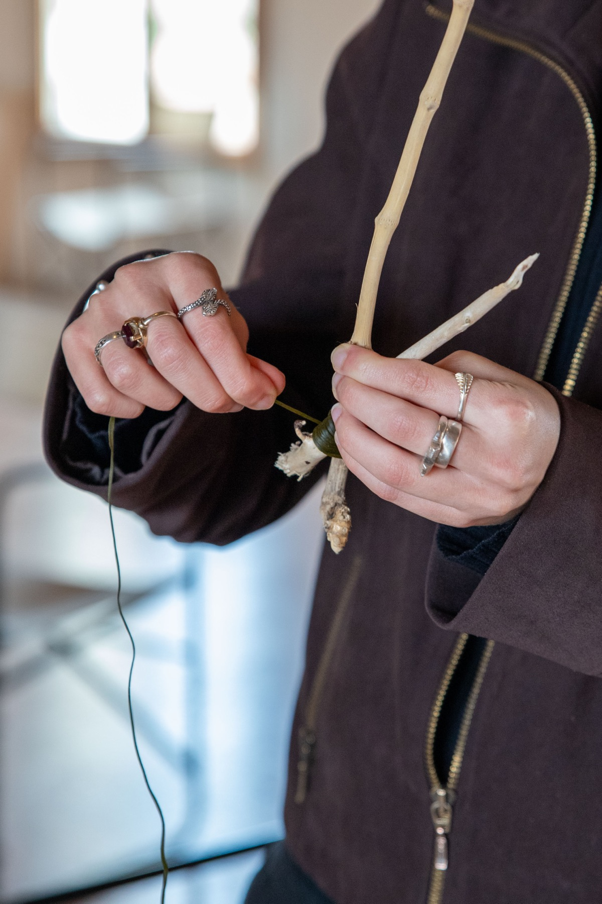

EMI BIOLAB
Matter, transformation, research.
Next online workshop · 5 Dec 2026

I am Carola Emanuela Godja, designer and researcher. Emi BioLab is a world of matter, transformation, research and possibility, grown around algae.
Fine Arts first, then Fashion at Iuav in Venice. Today I study how algae-derived matter behaves, and what it can become, with artists, universities and institutions.
Work together1 : 4Everything I do is a transformation
Where everything starts: salt, movement, time.
Living matter that grows, holds water and changes with the place.
Alginate: long chains that turn liquid into gel when they meet calcium.
Thread, skin, texture, form. Not a product: a possibility.
 Research
Research
 Projects
Projects
The practice
Working with matter, not just shaping it. Matter is never neutral: it behaves, it answers, and it changes the one who works with it. My research stays open, accessible, made with hands and ingredients anyone can find.
Enter the material archive

Every month a new experiment enters the archive: filaments, textures, samples, tests. What held, what failed, what it taught.
Behind every thread there are failures, measurements and long waits. The archive keeps all of it, so that others can start from there.

I share what I learn through making: online workshops, Venice in person, lectures for universities and institutions. Makers from more than 16 countries have worked with me.
Learning
Every workshop is a small research of its own: the material changes with water, climate and hands. Each person leaves with a method, not a recipe.
Lectures, talks and collaborations
An alginate sphere: water held by its own skin.